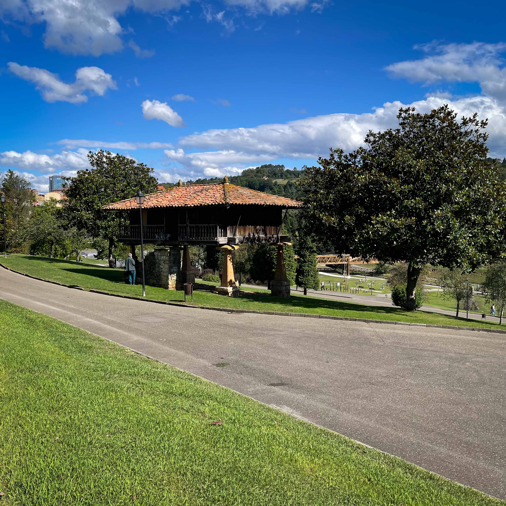
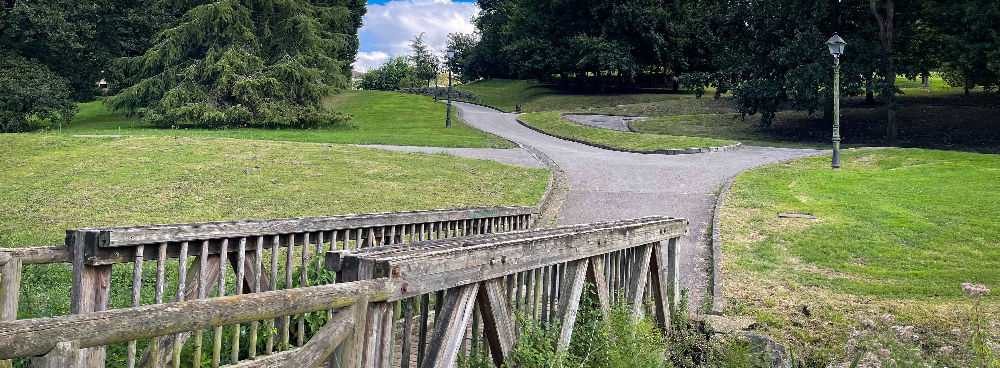

Vídeo del parque que ofrece una vista panorámica de 360º desde el punto de grabación.
Vídeo del parque con vista en 360º
El parque del sur de la ciudad de Oviedo.
 Parque de "Invierno"
Parque de "Invierno"
Tiene una superficie de 171.368 metros cuadrados, situado en el barrio de San Lázaro de Oviedo.
Donde encontrarás Naturaleza | Deporte | Bienestar.
Los visitantes disfrutarán de su esplendedor.

Parque
de Invierno.
.png)
Historia
La idea fue propuesta en 1952.
La construcción fue aprobada por el Ayuntamiento de Oviedo en 1988.
.png)
Naturaleza
Con vistas a la Sierra del Aramo.
El parque al sur de la ciudad.
.png)
Deporte
Actividades al aire libre.
Gimanasio, Rocódromo, Skate, instalación de Disc-Golf.
.png)
Rutas
Desde aquí parte la ruta de Fuso de la Reina.
Podemos encontrar varios caminos para pasear.
Con la ampliación se añadió el tunel del ferrocarril Vasco-Asturiano.
El Ayuntamiento de Oviedo amplió el Parque de Invierno incorporando varias parcelas. Estas incluyen diez fincas de la zona de Campiello, siete de permutas anteriores y una parcela donde está la boca oeste del túnel del ferrocarril Vasco-Asturiano, sumando un total de 40.224 metros cuadrados.
Con la ampliación del Parque, se han creado tres áreas distintas: la zona del túnel, la zona de la casona y la zona boscosa. El parque cuenta con una red de caminos que respetan el arbolado existente y una zona de descanso en los claros. Es un lugar ideal para pasear, disfrutar de las vistas y participar en diversas actividades. Además, conecta directamente con la senda peatonal Fuso de la Reina.

En estado puro.
.png) Naturaleza
Naturaleza
Disfrutaremos de la naturaleza y los espacios verdes , ideal para pasar un día perfecto al aire libre, en compañía de la familia o amigos.
Alberga una diversidad de especies botánicas como: Pinos, Robles, Olmos, Abedules, Castaños de Indias, Magnolios, Chopos...
Aprendemos
.png) La Vaca Biológica.
La Vaca Biológica.
La escultura, hecha con fibra óptica y metacrilato, es obra de Cuco Suárez, y está datada en 2003. Bien del Patrimonio Cultural del Ayuntamiento de Oviedo.
Podemos ver la alimentación,la respiración y la forma biológica de una vaca.
Descubre
.png) El Tunel del Vasco.
El Tunel del Vasco.
El ferrocarril Vasco-Asturiano se inauguró de Oviedo a San Esteban de Pravia, el dos de agosto de 1904. Y dejó de estar en funcionamiento en 1999.
Una actividad ferroviaria para dar paso a una senda orientada al deporte, el recreo y el esparcimiento.
Bienestar
 Deporte
Deporte
Este parque ofrece una variedad de instalaciones y actividades para todas las edades.
Skate: para que se diviertan los más jóvenes.
Gimnasio al aire libre: para practicar deporte los más mayores.
Rocódromo: para los más atrevidos.


La Ruta
 Fuso de la Reina.
Fuso de la Reina.
Desde el parque sale la ruta que en 7.5kms va pasando de lo urbano a lo rural.
Pasando por la antigua estación de La Manjoya.
Una ruta fácil para hacer con la familia.

Datos de Interés

L-D: Parque
24 horas
Disc Golf
24 horas

Ubicación
43º 21' 09"N
05º 51' 00"O

Mascotas
Sueltas
No Permitidas

Servicios
Disponibles
Sobre Nosotros
Somos un equipo de desarrolladores web dedicados a crear experiencias únicas.
Nos
esforzamos por transformar la visita a los parques por excelencia de Oviedo en experiencias
digitales visualmente atractivas, intuitivas y fáciles de usar.
© Copyright 2024.
Todos lo derechos reservados.